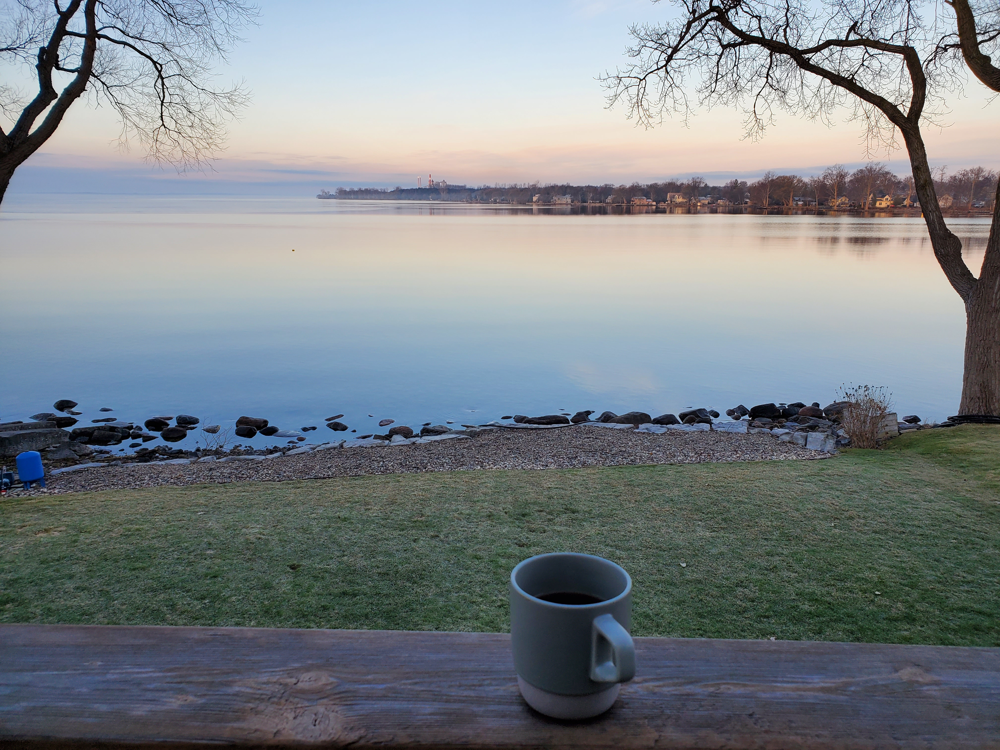

Coffee, in a Hario Switch
Every morning, I have a coffee. Maybe two if it's going to be a long day. Coffee, to me, is equal parts ritual and reward. It's a weird, specific, nerdy pursuit I have taken on, and I love sharing it with my friends whenever I can. I hope you brew something tasty.

Equipment:
- Fellow Ode V1 with V2 Burrs
- Hario Switch Base
- Hario Mugen Dripper
- Size 02 V60 Paper Filters
- Caraffe or drinking vessel
- Stopwatch/Timer
- Coffee beans, whole
- Water
>I used distilled water with a small amount of epsom salt and baking soda. You can read more about water here.
Procedure:
- Place Switch Base onto Mugen dripper.
- Set water to boil.
- Measure 16g of your current favourite batch of beans.
- Grind beans medium to coarse.
- Preheat brew vessel with hot water.
- Rinse paper filter.
- Place ground beans into Hario Switch. Ensure switch is "closed" such that it allows immersion brewing.
- Once water is boiled, start timer and use 50g of water to bloom for 45s to 1min.
- Pour another 100g of water in slow even circles outward, wetting the ground the whole way through.
- Let sit until timer reaches 3mins, open switch and release brew, let drain completely.
- Pour 100g of water in slow even circles outward. Let drain.
- Enjoy!